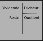

Algorithmes, types de variables et affectations
Notion d'algorithme
Définition : Algorithme
Un algorithme est une suite finie d'instructions à appliquer :
- dans un ordre déterminé,
- à un nombre fini de données,
- en un nombre fini d'étapes,
pour arriver à un certain résultat.
Des algorithmes, il en existe beaucoup. Certains sont des algorithmes numériques (ils travaillent sur des nombres), d'autres sont des algorithmes textuels (ils travaillent sur des textes), ou encore sur d'autres types de données (musiques, images, ou données plus abstraites).
Mais souvent les algorithmes sont répétitifs, longs à faire à la main, et nécessitent de fastidieux calculs. Ce qui est particulièrement pénible pour un être humain...
Appliquer une méthode
Info
On rappelle que la division euclidienne est la dicision classique des entiers, avec quotient et reste :

On considère l'algorithme suivant :
- Choisir un nombre entier naturel, qu'on appellera \(x\).
- Fixer un nombre \(p\) à 0.
-
Si le quotient de la division euclidienne de \(x\) par \(2\) est supérieur ou égal à \(1\) :
- Ajouter \(1\) à \(p\) ;
- Remplacer la valeur de \(x\) par ce quotient.
- Recommencer l'étape 3
-
Si le quotient de \(x\) par \(2\) est inférieur à \(1\), on arrête l'algorithme.
Appliquer cet algorithme sur les nombres \(15\), \(57\) puis 312$. Quelles sont les valeurs finales obtenus par \(p\) à chaque fois ?
On obtient \(p = 3\).
On obtient \(p = 5\)
On obtient \(p = 8\)
Certains algorithmes peuvent être véritablement fastidieux ! Mais les humains ont inventé les ordinateurs, qui eux sont capables de faire des tâches répétitives et des calculs très très rapidement - un ordinateur dont le processeur est cadencé à 3 GHz effectue 3 milliards d'opérations élémentaires par seconde (les opérations élémentaires sont généralement des additions sur des entiers pas trop grands).
Donc, dans un ordinateur, les données vont être utilisées et modifiées par l'algorithme, afin de produire son résultat, qui sera lui-même une donnée.
Pour manipuler les données , l'ordinateur les stockera dans des cases mémoires, cases que l'on repèrera par leur nom.
Variables, types et affectations
Une variable est une case mémoire possédant un nom, dans lequel on range une donnée.
Les données informatiques de base peuvent être classées dans 4 types différents :
- les entiers (nombre entier relatif) ;
- les flottants (en simplifiant, les nombres décimaux);
- les chaînes de caractères (des suites de lettres, chiffres, symboles, encadrées par des guillemets);
- les booléens (une valeur qui ne peut être que dans deux états : Vrai et Faux).
L'affectation est l'opération qui consiste à « ranger » une donnée dans une variable. En pseudo-code elle est symbolisée par une flèche pointant vers la gauche : \(\leftarrow\). On lira l'instruction :
par « X prend la valeur 7 », ce qui signifie que la valeur \(7\) a été rangée dans une case mémoire nommée \(X\).
Exemple
Considérons le programme de calcul suivant :
Choisir un nombre
Le multiplier par 5
Ajouter 4 au résultat
Ce programme est bien un algorithme :
- il y a trois instructions ;
- on doit les appliquer dans l'ordre ;
- on a une seule donnée de départ ;
- il y aura deux étapes de calcul.
La seule donnée utilisée est le nombre de départ. Si on applique cet algorithme :
- en nommant le nombre de départ X
- en choisissant comme nombre de départ 7
On obtient alors l'algorithme suivant, écrit en pseudo-code :
On peut alors représenter le tableau d'état de la variable X, qui représente l'évolution des valeurs dans les différentes cases mémoires nommées lors de l'exécution de l'algorithme :
| Etat de X | Commentaire |
|---|---|
| 7 | C'est la ligne \(X~<--~ 7\) |
| 35 | C'est la ligne \(X~<--~ 5\times X\) , \(X\) prend 5 fois la valeur qu'il possède |
| 39 | C'est la ligne \(X~<--~ X+4\), \(X\) prend la valeur qu'il possède plus 4 |
A la fin de l'algorithme, la case mémoire contient \(39\), les autres valeurs ayant totalement disparues.
Exemples de types de variables
- \(a \leftarrow 56\) : la variable \(a\) prend la valeur entière \(56\);
- \(b \leftarrow 3,2\) : la variable \(b\) prend la valeur flottante \(3,2\);
- \(c \leftarrow a+b\) : la variable \(c\) prend la valeur de la somme des variables \(a\) et \(b\);
- \(d \leftarrow \text{"Hello world"}\) : la variable \(d\) reçoit la chaîne de caractères
"Hello world"; - \(e \leftarrow True\) : la variable \(e\) reçoit la valeur booléenne Vrai;
- \(f \leftarrow 4<2\) : la variable \(f\) reçoit la valeur booléenne Faux.
Le langage Python
Langage Python
Python est un langage informatique créé en 1991 par l'informaticien Néerlandais Guido vann Rossum.

C'est un langage de haut niveau, ce qui signifie qu'il est assez éloigné du code machine qui est très difficile à lire et à comprendre pour un être humain. En ce sens, Python est un langage informatique simple à apprendre, et dont l'écriture est proche du langage naturel. Il est ainsi devenu le langage générant le plus de recherches sur le web en octobre 2021.
Pour autant, l'ordinateur qui exécute un programme Python reste une machine sans intelligence, et la programmeuse ou le programmeur doit respecter une syntaxe très stricte pour que l'ordinateur exécute la tâche qui lui est confiée.
Exemple
Voici le code python correspondant à l'algorithme que nous avons écrit précédemment :
X = 7
X = 5*X
X = X+4
On peut voir son exécution pas à pas depuis le site python tutor :
On constate que :
- en python, l'instruction d'affectation est écrite avec un signe
=; - la multiplication se fait par l'intermédiaire du signe astérisque
*.
Premiers exercices
Exercice 1
On considère l'algorithme en pseudo-code suivant :
-
Compléter le tableau d'état des variables suivants :
\[ \begin{array}{|c|c|} \hline A & B\\\hline & \\\hline & \\\hline & \\\hline \end{array} \] -
Quelles sont les valeurs contenues par les variables \(A\) et \(B\) après l'exécution de l'algorithme ?
-
Vérifier vos réponses précédentes ci-dessous :
Exercice 2
On considère les deux algorithmes S1 et S2 suivants :
- S1 :
- S2 :
- Que contient A à la fin de S1 ? de S2 ?
- L'ordre a-t-il une importance ?
- A la fin de S1, \(A\) contient
"bonsoir". A la fin de S2, \(A\) contient"bonjour". - Oui, l'orde à une importance. Les instructions sont lues de manière séquentielle, du haut vers le bas
Exercice 3
Soient deux variables \(A\) et \(B\), et l'algorithme suivant :
- Justifier qu'à l'issue de l'algorithme ci-dessous, la valeur de la variable B est 12.
- A la fin de l'algorithme, on ajoute l'instruction \(C \leftarrow (A=12)\). Quel est le type de la donnée contenue par C ? Quelle est sa valeur ?
- Ecrire ce code en Python (attention il y a un piège sur la dernière ligne !)
Le programme suivant doit être placé dans Python Tutor, et permet de répondre à toutes les questions :
A = 1
B = 3
A = A+B
B = A*B
C = (A == 12)
Le piège est d'écrire A=12, car en python, le symbole = ne permet pas de tester une égalité, vu qu'il est utilisé pour l'affectation. Pour tester une égalité, et donc récupérer une valeur booléenne, il faut utiliser un double-égal : A==12.
Exercice 4
On considère l'algorithme suivant :
- Compléter le tableau d'état de la variable \(X\). Quelle valeur est affecté à \(X\) à la fin de l'algorithme ?
- On remplace la première ligne par \(X \leftarrow a\), où \(a\) est un réel donné. Laquelle de ces trois propositions correspondent à la valeur affecté à \(X\) après exécution de l'algorithme ?
- \(2a+3^2\)
- \((2a+3)^2\)
- \(2(a+3)^2\)
A venir !
Exercice 5
On considère l'algorithme suivant :
- Compléter le tableau d'état de la variable \(X\). Quelle valeur est affecté à \(X\) à la fin de l'algorithme ?
- On remplace la première ligne par \(X \leftarrow a\), où \(a\) est un réel donné. Quelle expression dépendant de \(a\) est affectée à \(X\) après exécution de l'algorithme ?
A venir !